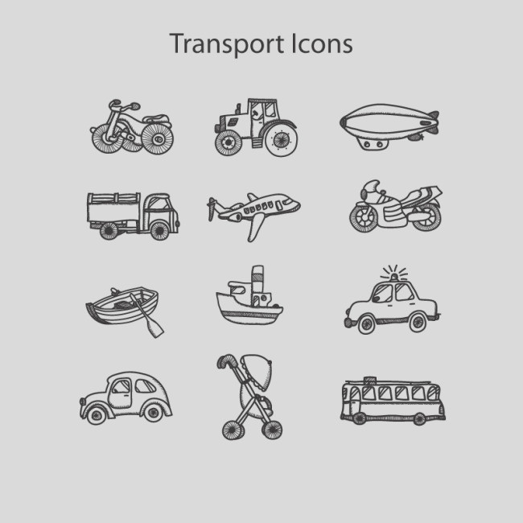

Backgorund
Method of travel to work by sex

Method of travel to workis a big problem for office worker,they always consider about how to get to company. Most of people decide take bus but all we know driver our own car is a comfortale and convinient way to going out. This reasearch is going to discus the population of people travel to work by drving car and devide by sex.And I'm going to compare the data between 2011 and 2016 in NSW.
The dataset
Context of data
The assigned dataset I'm analysing is the 2011 and 2016 census data on Method of travel to work.This is sort by gender,allowing for acomprehensive understanding method of travel to work distribution throughout Austrilia. Since the geographical regions of SA1 has changed significantly over time, we will use the Postal Area instead. The dataset is collect to allow the government to check the method of travel to work to defined the level of people and the traffic situation of NSW.